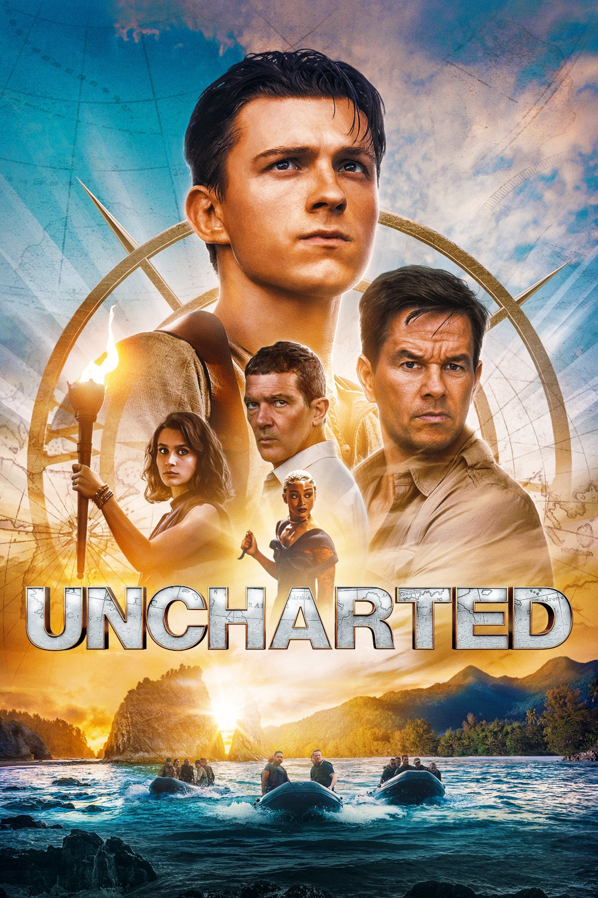

Мировая премьера: 18 февраля 2022
Слоган: Удача любит смелых.
Сюжет: Опытный охотник за сокровищами Виктор "Салли" Салливан нанимает в помощники ловкого вора Нейтана Дрейка для поиска богатств Фердинанда Магеллана, пропавших 500 лет назад. То, что начинается как обычное ограбление, превращается в опаснейшее приключение, благодаря которому герои оказываются в самых разных уголках мира. Их цель – добраться до сокровища раньше жестокого Монкада, который считает себя и свою семью законными наследниками клада. Если Нейту и Салли удастся разгадать одну из самых старых тайн в истории, они смогут отыскать сокровища стоимостью 5 миллиардов долларов и, возможно, даже давно исчезнувшего брата Нейта... Но сначала им предстоит научиться работать в команде.
Режиссёр: Рубен Фляйшер
В основе: Серия компьютерных игр "На картах не значится" (США, выходят с 2007)
В ролях:
| Том Холланд | Нейт Дрейк |
| Марк Уолберг | Виктор "Салли" Салливан |
| София Али | Хлоя Фрейзер |
| Антонио Бандерас | Сантьяго Монкада |
| Тати Габриэль | Джо Брэддок |
| Стивен Уоддингтон | Скотти |
| Руди Панкоу | Юный Сэм |
| Тирнан Джонс | Юный Нейт |
Бюджет: $ 120 млн.
Кассовые сборы в США: $ 149 млн.
Кассовые сборы в мире: $ 407 млн.
Продолжительность: 1 ч. 46 мин.
Рейтинг: 6.3